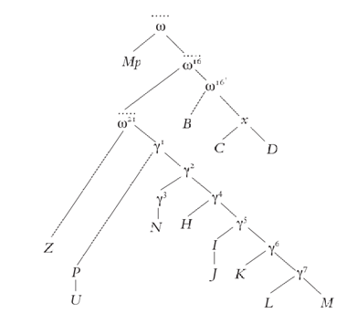

La Celestina
Realizar la edición crítica de una obra resulta siempre una labor compleja, pero en el caso de La Celestina esta complejidad se puede ver acentuada por varios motivos como son la mutación que experimentó en su génesis con el añadido de partes nuevas, la transformación de su título, sus problemas de autoría o su gran auge editorial con un gran volumen de ejemplares impresos en poco tiempo y las tempranas traducciones a otros idiomas, entre otros.
Todos estos aspectos, que desarrollamos brevemente a continuación, pueden suponer la adopción de decisiones delicadas a la hora de abordar su edición crítica.
A lo largo de toda su tradición editorial, la cuestión del autor único ―por obra de Fernando de Rojas, a quien tradicionalmente se ha atribuido la composición― o compartida ha generado polémica y sigue haciéndolo entre los estudiosos de la obra, llegando incluso a dudarse últimamente de que este sea el verdadero artífice.
La postura de la autoría única, defendida por Menéndez y Pelayo, entre otros, explicaba que el autor jugaba con esa ficción de continuar con una obra ajena y de que la escribiese en solo quince días, como llega a asegurar en la carta inicial. Se podría tratar, por tanto, de un recurso de captatio benevolentiae para favorecer la disposición del lector ante su inexperiencia o incluso para protegerse de la censura.
Respecto a los de la autoría compartida, postura más extendida y aceptada en la actualidad, con referentes como Menéndez Pidal, entre otros, se basan en diferencias esenciales entre el Acto I y el resto de la obra como las fuentes utilizadas (Aristóteles y Séneca, para el inicio, y de Petrarca, para el resto de los actos), el arcaísmo lingüístico, la dialéctica argumentativa de los personajes, etc., para demostrar que hallaríamos detrás dos autores diferentes. La aparición del Manuscrito de Palacio en 1989 ha podido servir para confirmar esta teoría, pero no existe todavía un acuerdo sobre la propia naturaleza de tal manuscrito que haga decantarse por esta hipótesis.
La polémica ahonda incluso más, ya que estudiosos como Remedios Prieto y Antonio Sánchez o José Luis Canet, ponen en tela de juicio la autoría de Rojas ateniéndose a argumentos como la ausencia de su nombre en las primeras portadas impresas o la escasa repercusión que este tuvo en los círculos literarios del momento.
El título o, más bien, los títulos de la obra han supuesto otro elemento de complejidad para la ecdótica del texto.
El título originario, simplificado como la Comedia de Calisto y Melibea ― para las tres ediciones que se conocen, a saber, Burgos 1499; Toledo 1500 y Sevilla 1501―, se hallaba íntimamente relacionado con el contenido y el género en el que se clasificaba, comedia humanística.
Posteriormente, este se transformó en la Tragicomedia Calisto y Melibea ―resto de ediciones― cuando mutó su nombre por petición del público para que no existiera esa disonancia con un contenido que no se entendía como placentero, así lo explica el propio autor en el Prólogo: «El primer auctor quiso darle denominación del principio, que fue plazer, y llamola comedia. Yo, viendo estas discordias, entre estos estremos partí agora por medio la porfía y llamela tragicomedia». También aumentó su número de actos de 16 a 21, aunque no era intención suya tal como expone: «hallé que querían que se alargasse en el processo de su deleite destos amantes; sobre lo cual fui muy importunado, de manera que acordé, aunque contra mi voluntad, meter segunda vez la pluma en tan estraña labor».
En cuanto al último título que adoptó y por el que es conocida actualmente la obra, La Celestina, surgió por primera vez fuera de España, con la publicación de una edición italiana traducida por Ordóñez e impresa en Venecia en 1519, se retomó en la traducción francesa anónima de 1527 como Célestine y llegó tardíamente a España, de hecho, se imprimió por primera vez con tal título en la portada en la edición de Alcalá de Henares de Juan de Villanueva de 1569, aunque fuese conocida ya así en el mundo editorial desde el inicio de su tradición de impresión a principios del XVI, como reza en otros documentos.
La cuestión de su adscripción a un género también plantea dificultades. Las dos posturas enfrentadas en este caso son la de que se tratase de una novela dramática dialogada por la amplia extensión de lo contado, como proponían Amador de los Ríos, Menéndez y Pelayo o Dorothy S. Severin; o la de que fuera una comedia humanística, con partidarios como Alan Deyermond o Rosa Lida de Malkiel, entre otros, posición mayoritariamente aceptada por la crítica en la actualidad.
Se considera que La Celestina constituyó la primera comedia humanística en lengua vulgar. Tanto su título originario, Comedia, como su presentación dialogada contribuirían a corroborarlo. Además, hay otros argumentos que redundan en esta adscripción y son las concomitancias con la trama de otras comedias humanísticas del momento (la Poliscena o el Poliodorus); la inserción de sentencias, proverbios y citas clásicas y la pretendida finalidad moral de estas comedias, como era censurar la pasión sexual a través del humor.
A pesar de ser considerada del género dramático, su gran extensión, al superar los cinco actos máximos del teatro clásico, no permitían que estas obras estuviesen destinadas a la representación, sino a la lectura en voz alta ante un auditorio en ámbitos académicos. hecho frecuente con algunas modalidades de teatro erudito, como las tragedias de Séneca.
En cambio, a diferencia de las comedias humanísticas italianas, La Celestina plantea novedades que entroncan con la tradición española como son la influencia de la ficción sentimental o la presencia de poemas, que ralentizarían la trama y tampoco contribuirían a la posible representación escénica de la obra.
Asimismo, la estructura de la obra resulta compleja por intercalar la historia dialogada en sí, en prosa, con otros elementos paratextuales preliminares y posliminares al cuerpo, tanto en verso como en prosa, que, además, se transforman en función del estadio redaccional del texto. Estructura y transmisión son, por tanto, elementos indisociables en un texto como La Celestina.
De hecho, la transformación de la inicial Comedia de Calisto y Melibea, de dieciséis actos, en la Tragicomedia de Calisto y Melibea, al ampliarla con la adición de cinco actos, formato que acabó siendo el definitivo, es uno de los hitos más destacados de su transmisión textual.
Esta es la estructura que tendría la obra en su versión final:
- La carta de «El autor a un su amigo»: se explica que el autor es un estudiante de Leyes en Salamanca que decide acabar durante unas vacaciones de quince días un escrito, Acto I, que ha encontrado por casualidad.
- Octavas acrósticas (once estrofas): al unir la primera letra de cada uno de los versos de las once coplas se descubre la identidad y procedencia del autor.
- Prólogo: «Todas las cosas ser criadas […]».
- Cuerpo dialogado de la obra, constituido a su vez por:
- Incipit: «Síguese la Comedia de Calisto y Melibea[...]».
- Argumento general.
- Veintiún actos precedidos de su resumen argumental.
- Tres octavas del autor: «Concluye el autor[...]», explica su propósito moralizante.
- Siete octavas del editor Alonso de Proaza: explica cómo extraer el nombre del autor de las octavas iniciales.
Otro de los aspectos importantes en una edición crítica es establecer el stemma o la filiación entre los distintos testimonios, sobre todo cuando existe tal número de ediciones y algunas perdidas como en La Celestina. El stemma se propone teniendo en cuenta las lecciones y los errores compartidos por los distintos testimonios.
La aparición del Manuscrito de Palacio condujo a la reestructuración de los stemmata que se habían propuesto hasta la fecha. En 1993, Lobera presentó una filiación de las ediciones más antiguas de la obra que recoge en la edición de La Celestina publicada por la RAE en 2011 y es la siguiente.

En él se aprecia que existirían varios nudos, ω, ω16 y ω21, que son el arquetipo (‘hipotético antecesor común de las versiones textuales’) y dos subarquetipos de toda la tradición manuscrita (Mp) e impresa (el resto). A su vez, ω16’ es el subarquetipo de las tres ediciones de la Comedia que se conservan (B, C, D), aunque B no deriva del subarquetipo x, que sí que comparten C y D. De un arquetipo previo, ω16, derivaría el arquetipo de la Tragicomedia, ω21, que daría lugar a los distintos testimonios por medio de un gran número de subarquetipos desaparecidos.
En la memoria se pueden encontrar alusiones a otros stemmata propuestos. Podríamos concluir que quedan muchas cuestiones por resolver, aunque parece haber cierta unanimidad en separar el Manuscrito de la filiación común de las ediciones impresas y, dentro de las Comedias, se suele presentar la de Burgos algo desligada de la tradición impresa y con una menor conexión con las Tragicomedias.